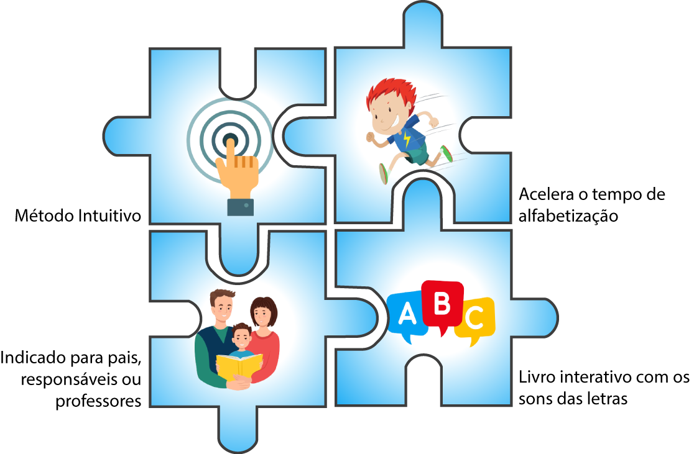

Você sabia que mais da metade das crianças brasileiras chegam ao final do 3º Ano do Ensino Fundamental sem saber ler? Esse resultado é consequência do péssimo método de alfabetização das escolas brasileiras. A forma com que as crianças são alfabetizadas hoje aumenta para 4 anos, o que poderia ser feito em 4 meses, prolongando o tempo de aprendizado natural do cérebro da criança.
Investigamos porque nos países que aparecem na 1º posição no PISA, como EUA, Inglaterra e Finlândia as crianças se alfabetizam de forma mais rápida e efetiva, e, descobrimos que a resposta está nos materiais utilizados em sala. Esse material foi criado com base nessa metodologia cientificamente comprovada. Alfabetize seu (sua) filho (a) ou aluno em 4 meses, investindo apenas 30 minutos por dia!
Principais Atividades
Benefícios
Livro infantil: As letrinhas Falantes
Através deste livro você irá introduzir o alfabeto fônico de forma divertida. O material possui QR Code com os sons de cada letra. Assim você coloca para a criança ouvir ou usa para aprender e ensinar o som para a criança;
Livro de Colorir o alfabeto
Atividades de apresentação do alfabeto com letras, forma de articulação da boca e QR code com link para ouvir os sons;
Livro das Vogais e Consoantes
São páginas de atividades intuitivas e sequenciais com o alvo de consolidar a associação do som e da grafia da letra;
Material de Apoio
Alfabeto de parede colorido com a imagem da articulação da boca para ajudar na memorização dos sons. Silabário com as imagens da articulação da boca.
Veja o que estão falando
Andreia
Sou pedagoga e, atualmente trabalho como professora particular. Através dos cursos com a Professora Kátia Evans, pude ter acesso aos seus preciosos materiais de alfabetização fônica e obter um amplo conhecimento de como alfabetizar de forma muito eficaz. Aprendi bem mais do que na faculdade e meus alunos estão avançando a cada dia.
Mariana
Sou professora de educação infantil na rede municipal e já havia testado várias metodologias para ensinar aos meus alunos.
Quando adotei o material da Kátia, passei a trabalhar a consciência fonológica de uma forma mais simples e lúdica.
Meus alunos que não conheciam nem mesmo o alfabeto completo e nem reconheciam ou escreviam seu próprio nome no início do ano letivo já avançaram demais. Achei o material muito completo e de simples compreensão.
Mãe homeschooler Miriam
Amei o material "As letrinhas falantes", me ajudou na alfabetização do meu filho, é simples de aplicar, além de colorido e interativo.
Cada letrinha tem o som pelo QRcode, o que deixa tudo mais interessante para os pequenos.
Sobre a Autora
Kátia Evangelista, mãe educadora, neuropsicopedagoga de formação, professora atuante há 15 anos, estava desiludida com as falhas do sistema educacional e com a carência do ensino de valores cristãos para trabalhar o caráter das crianças.
Ao ter seus próprios filhos desejou explorar todo o seu potencial acadêmico e resolveu pausar sua carreira como diretora escolar. Decidiu empreender na área da educação: comprou uma escola e formatou o modelo educacional baseado em sua cosmovisão.
Parecia o negócio perfeito, além de sonhar em impactar uma geração, seus filhos também cresceriam seguros e com uma cosmovisão pautada em valores e princípios. Nesse processo experimentou muitos entraves no percurso e descobriu uma nova solução para atingir o seu ideal de forma absurdamente mais rápida: o homeschooling.
Como educadora, já utilizava o método fônico para aplicar com seus alunos e na modalidade homeschooling alfabetizou seus filhos em quatro meses. Benjamin, aos 5 anos, já leu mais de 25 livros de histórias infantis e lê em todos os formatos de letras, cursivas (letra de mão) e de imprensa (fôrma).